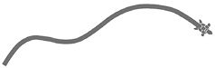
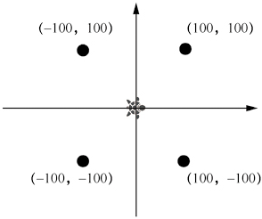
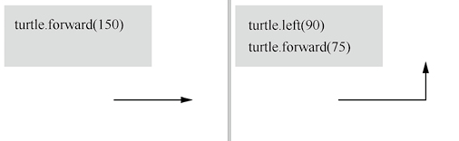
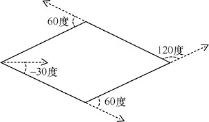
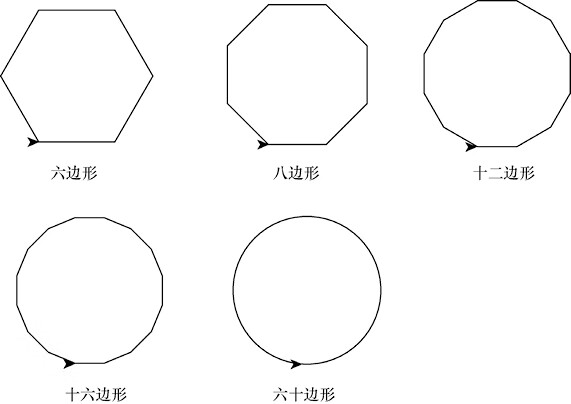
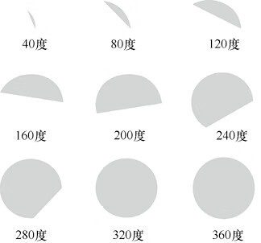
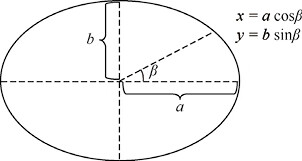
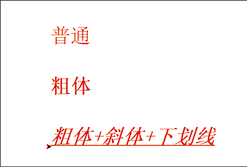
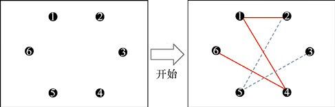
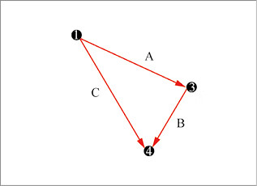

首页 > 编程笔记
Python turtle入门教程（简明版）
turtle 模块是 Python 语言中一个很流行、很强大的画图小工具。
Python 中的 turtle 模块来源于历史悠久的 LOGO 语言，当今计算机领域的很多传奇人物在小时候都玩过 LOGO 语言。使用 LOGO 语言，通过一些简单的指令就可以在计算机屏幕上绘制有趣的图案。
正是这种画图的有趣方式，使很多人对数学、计算机等相关学科产生了浓厚的兴趣。
Python turtle 最大可能地还原了 LOGO 语言中使用小海龟操作的特点，并丰富了作图功能。
初代 turtle 模块被添加到了 2001 年 12 月 21 日发布的 Python 2.2 版本的 Python 标准库中，历经多个版本，目前 turtle 模块已逐渐稳定，并拥有了当前版本中的新功能和相应的操作。
通过本教程的学习，我们将了解什么是 turtle，了解如何使用 turtle，并能掌握一些重要的概念和命令，还能利用学到的知识开发简单有趣的游戏。
那么在 turtle 的世界中，我们怎样画图呢？
其实也是类似的，我们需要一张虚拟的画布、一支虚拟的画笔和各种虚拟的颜料。另外，带动画笔移动的不再是我们的手，而是计算机屏幕上的一只小海龟。当然，这只小海龟是能听我们指挥的。
我们可以想象有这么一只小海龟：在一张画布上，它根据我们的指令爬行，爬行的路径形成了要绘制的图形，如图1所示。
下面从一个简单的例子来看看小海龟究竟是怎样画图的。
然后，创建一张画布。
接着给小海龟发指令，让它开始移动。
先向前移动150“步”。
提示：turtle 的向前爬行（forward）方向和当前小海龟面朝的方向有关，如果小海龟转了 180 度，则它的向前爬行其实是在倒退（backward）。
为了给正方形填充颜色，我们需要引入 turtle 中的颜色填充的方法，turtle 通过 begin_fill() 开始填充，通过 end_fill() 结束填充，通过 fillcolor() 设置所要填充的颜色。
让我们来做进一步练习，这次画一个菱形，该如何编写程序呢？显然，菱形的绘制比正方形更加复杂，因为绘制菱形的时候，每次小海龟转动的角度值不再是固定的了。
我们设计一个内角为 60 度的菱形，如图5所示。
我们采用查询到表的方法修改上一次的代码。
仔细观察这些图形，你会发现，随着多边形边数的增加，多边形越来越接近圆形。
请记住这个发现。不同于数学世界中完美的圆形，在计算机的世界中，我们使用很多小线段（或小点）来绘制近似的圆形。turtle 为了方便我们绘制圆形，提供了一个 circle() 函数，可直接用于绘制圆形。
circle() 函数传入的参数是圆的半径，dot() 函数传入的参数是圆的直径。
在用 dot() 函数绘制实心圆时，还可以传入第二个参数，指定实心圆的颜色，例如，dot(100, 'red') 这个指令表示绘制红色的实心圆。
当然，也可以用 circle() 函数绘制实心圆，只要指定相同的 pencolor() 和 fillcolor(), 并在调用 circle() 函数之前及之后分别加上 begin_fill() 和 end_fill() 就可以了。
利用 circle() 函数，还可以画圆的一部分，这时候需要传入 circle() 的第二个参数：角度，示例代码如下。
注意代码中的几个新指令。:
注意，下面会介绍椭圆的一些数学知识，如果还没有学习过相关数学知识，可以暂时跳过本节。
如果把椭圆宽度的一半定义为 a，把椭圆高度的一半定义为 b，则椭圆上每一个点的坐标可以用这个点到中心点的夹角的三角函数以及 a、b 表示出来，如图8所示。
我们将绘制椭圆的代码放在一个自定义函数 myellipse() 中，以便在其他地方调用。
文字输出是通过 write() 函数实现的。write() 函数的具体形式如下。
图10：卡通米奇
游戏的过程如图 11 所示（此处用实线表示红色，用虚线表示蓝色）。
当蓝方再连接了 ②、③ 点，蓝方即为“输家”。
当红方再连接了 ①、⑥ 点或 ②、④ 点，红方即为“输家”。
理解了游戏规则后，在开始编写这个游戏程序前，我们还要介绍一个概念——人机交互。
不同于简单地让计算机画图，用计算机玩游戏总是需要和计算机进行交互。
所谓交互，就是当你做了某个动作后，计算机会有相应的反应。而且这种反应是和你之前的动作密切相关的。不同于人和人之间可以通过说话、写字进行沟通互动，人和计算机之间一般是通过键盘、鼠标、摄像头、麦克风等进行“沟通”的。
以鼠标为例，当你在操作鼠标时，计算机通过时刻跟踪鼠标的位置（x、y坐标值）、鼠标的按键（左键单击、双击，右键单击）、滚轮的滚动来理解你的意图。
例如在浏览网页或文章时，你滚动滚轮，计算机就会帮你翻页；你在某个按钮上单击鼠标左键，计算机就会理解为你需要单击这个按钮。
我们都知道，计算机只是一台机器，它的“思考”其实是我们编写程序来帮它完成的。计算机能理解并响应我们的操作，其实是因为在计算机接收到各种“事件”（鼠标单击、键盘输入等）时，我们已经为计算机编写好了处理程序，告诉了计算机应该怎么做。
在 turtle 中，我们一般通过鼠标和计算机交互。因此，我们需要处理鼠标的3种“事件”：
每一个事件都可以关联一个处理函数，如 turtle.onclick(mouse_click)。mouse_click() 是一个函数，可以接收鼠标单击时的信息，如 def mouse_click(x, y)，其中 x、y 就是鼠标单击点的 x、y 坐标。
在我们需要编写的六点连线游戏程序中，有几个难点，我们需要一一进行分析。
1) 如何判断玩家（红方或蓝方）选中了哪个点？
分析：我们可以将玩家操作鼠标（单击）的位置 (x, y) 和 6 个点依次进行比较，当鼠标单击的位置和某个点的位置距离非常小（小于圆点的半径）时，我们就可以判断，玩家“选中”了这个点。
2) 如何判断当前的玩家是红方还是蓝方，即如何判断当前的操作是红方的操作，还是蓝方的操作？
分析：我们可以用一个变量记录当前的操作人是红方还是蓝方，在当前的操作人进行了一次有效的连线（即选中了两个有效的点）后，立即将该变量转化为记录另一个操作人操作的变量。
3) 如何判断玩家是否失败？
分析：判断失败的依据是，玩家的连线中，有3条线组成了一个三角形。不同于人可以通过眼睛的观察发现是否有3条线组成了一个三角形，对于计算机而言，只能通过一些逻辑判断来“发现”是否存在3条线组成了一个三角形的情况。
通过观察三角形的特性，我们发现，当3条线组成一个三角形时，这3条线存在一些特定的关系。
我们把6个点依次编号为 1、2、3、4、5、6。把连线的两个点中编号小的点定为连线的“首”，编号大的点定为连线的“尾”，那么构成3条连线的3个点，必然符合如下规则：
只要我们找到3个点符合以上规则，我们就可以判定存在3条线组成了一个三角形，如图 12 所示。
以下是程序代码。
Python 中的 turtle 模块来源于历史悠久的 LOGO 语言，当今计算机领域的很多传奇人物在小时候都玩过 LOGO 语言。使用 LOGO 语言，通过一些简单的指令就可以在计算机屏幕上绘制有趣的图案。
正是这种画图的有趣方式，使很多人对数学、计算机等相关学科产生了浓厚的兴趣。
Python turtle 最大可能地还原了 LOGO 语言中使用小海龟操作的特点，并丰富了作图功能。
初代 turtle 模块被添加到了 2001 年 12 月 21 日发布的 Python 2.2 版本的 Python 标准库中，历经多个版本，目前 turtle 模块已逐渐稳定，并拥有了当前版本中的新功能和相应的操作。
通过本教程的学习，我们将了解什么是 turtle，了解如何使用 turtle，并能掌握一些重要的概念和命令，还能利用学到的知识开发简单有趣的游戏。
1. turtle 中的基本概念
在现实世界中，我们画图需要一张画布、一支画笔和各种颜料，通过画笔在画布上移动来绘制图形，通过不同的颜料，改变画笔绘制出的图形颜色。那么在 turtle 的世界中，我们怎样画图呢？
其实也是类似的，我们需要一张虚拟的画布、一支虚拟的画笔和各种虚拟的颜料。另外，带动画笔移动的不再是我们的手，而是计算机屏幕上的一只小海龟。当然，这只小海龟是能听我们指挥的。
我们可以想象有这么一只小海龟：在一张画布上，它根据我们的指令爬行，爬行的路径形成了要绘制的图形，如图1所示。

图1：turtle 中的小海龟
图1：turtle 中的小海龟
下面从一个简单的例子来看看小海龟究竟是怎样画图的。
# 导入turtle模块 import turtle # 创建一张画布 wn = turtle.Screen() # “告诉”小海龟, 向前移动150“步” turtle.forward(150) # 向左转90度 turtle.left(90) # 再向前移动75“步” turtle.forward(75) # 结束绘图 turtle.done() 首先，我们需要导入turtle模块。 import turtle提示：turtle 是一个内置模块，因此我们无须安装其他软件，就可以直接使用它。
然后，创建一张画布。
wn = turtle.Screen()
画布分为 4 个象限，如图2所示，小海龟开始的位置是屏幕中心，也就是点 (0,0) 的位置，我们也常称这点为 Home。

图2：画布
图2：画布
接着给小海龟发指令，让它开始移动。
先向前移动150“步”。
turtle.forward(150)
接着左转 90 度。turtle.left(90)
再往前移动75“步”，如图3所示。turtle.forward(75)
最后通过 turtle.done() 结束绘图。提示：turtle 的向前爬行（forward）方向和当前小海龟面朝的方向有关，如果小海龟转了 180 度，则它的向前爬行其实是在倒退（backward）。

图3：绘制效果
图3：绘制效果
2. 画笔的各种设定
我们修改一下前面的代码，调整画笔的颜色和粗细。
import turtle
wn = turtle.Screen()
# 调整画笔的颜色为红色
turtle.pencolor('red')
# 调整画笔的粗细为5
turtle.pensize(5)
turtle.forward(100)
turtle.left(90)
turtle.forward(100)
turtle.left(90)
turtle.forward(100)
turtle.left(90)
turtle.forward(100)
turtle.done()
调整画笔的颜色为红色。
turtle.pencolor('red')
调整画笔的粗细为 5。turtle.pensize(5)
提示：在 turtle 中，颜色的表示有 3 种方式：- 第一种是字符串方式，如 'red'、'blue'、'green'；
- 第二种是十六进制方式，如 '#33cc85'；
- 第三种是 RGB 方式，如 alex.pencolor(0, 255, 0), 但使用这种方式需要先通过全局函数进行颜色模式的切换，如 turtle.colormode(255)。
3. 绘制正方形、菱形
前面我们通过 3 次左转、4 次向前移动相同的步数，绘制了一个正方形，但我们发现这个正方形只有边线是有颜色的，正方形的内部是没有颜色的。为了给正方形填充颜色，我们需要引入 turtle 中的颜色填充的方法，turtle 通过 begin_fill() 开始填充，通过 end_fill() 结束填充，通过 fillcolor() 设置所要填充的颜色。
import turtle
wn = turtle.Screen()
turtle.pencolor('red')
# 设置填充的颜色为黄色
turtle.fillcolor('yellow')
# 开始填充颜色
turtle.begin_fill()
# 使用循环绘制正方形的边
for i in range(4):
turtle.forward(100)
turtle.left(90)
# 结束填充颜色
turtle.end_fill()
turtle.done()
由于正方形每一条边的绘制方式相同，我们用循环语句来代替重复的绘图指令。执行程序后，画布上的最终效果如图4所示。让我们来做进一步练习，这次画一个菱形，该如何编写程序呢？显然，菱形的绘制比正方形更加复杂，因为绘制菱形的时候，每次小海龟转动的角度值不再是固定的了。
我们设计一个内角为 60 度的菱形，如图5所示。

图5：菱形
图5：菱形
我们采用查询到表的方法修改上一次的代码。
import turtle
wn = turtle.Screen()
turtle.pencolor('red')
turtle.fillcolor('yellow')
#将每次转动的角度保存为列表
degree_list = [-30, 60, 120, 60]
turtle.begin_fill()
for i in range(4):
# 采用查表的方式获取转动角度
turtle.left(degree_list[i])
turtle.forward(100)
turtle.end_fill()
turtle.done()
4. 绘制多边形和圆形
结合前面绘制正方形、菱形的方法，我们很容易编写出绘制多边形的代码。
import turtle
wn = turtle.Screen()
# 多边形的边数
edge_count = 6
# 多边形的边长（大小相近的多边形，边数越多，边长越小）
edge_length = 500 / edge_count
# 多边形每条边转动的角度等于360度除以边数
edge_angle = 360 / edge_count
for i in range(edge_count):
turtle.forward(edge_length)
turtle.left(edge_angle)
turtle.done()
注意 edge_count 这个变量，它代表多边形的边数。我们将这个变量依次赋值为 6、8、12、16、60，并分别执行程序，可以看到依次绘制出图6所示的六边形、八边形、十二边形、十六边形、六十边形。

图6：多边形
图6：多边形
仔细观察这些图形，你会发现，随着多边形边数的增加，多边形越来越接近圆形。
请记住这个发现。不同于数学世界中完美的圆形，在计算机的世界中，我们使用很多小线段（或小点）来绘制近似的圆形。turtle 为了方便我们绘制圆形，提供了一个 circle() 函数，可直接用于绘制圆形。
import turtle wn = turtle.Screen() # 直接绘制半径为100的圆形 turtle.circle(100) turtle.done()直接使用 circle() 函数绘制圆形非常方便、简捷。但我们也要知道 circle() 函数的原理，用该函数画出的圆是由很多的小线段（或小点）组成的。另外，turtle 还提供一个 dot() 函数用于直接绘制实心圆。
circle() 函数传入的参数是圆的半径，dot() 函数传入的参数是圆的直径。
在用 dot() 函数绘制实心圆时，还可以传入第二个参数，指定实心圆的颜色，例如，dot(100, 'red') 这个指令表示绘制红色的实心圆。
当然，也可以用 circle() 函数绘制实心圆，只要指定相同的 pencolor() 和 fillcolor(), 并在调用 circle() 函数之前及之后分别加上 begin_fill() 和 end_fill() 就可以了。
利用 circle() 函数，还可以画圆的一部分，这时候需要传入 circle() 的第二个参数：角度，示例代码如下。
import turtle
wn = turtle.Screen()
turtle.pencolor('silver')
turtle.fillcolor('silver')
# 分3行绘制
for i in range(3):
# 分3列绘制
for j in range(3):
# 提起画笔，避免画笔移动的时候“污染”画布
turtle.penup()
# 将画笔移动到特定的位置
turtle.goto(j*150, 200 - i * 150)
# 调整画笔的方向为向上
turtle.setheading(90)
# 落下画笔，准备画图
turtle.pendown()
turtle.begin_fill()
# 绘制半径为50，角度依次增大
turtle.circle(50, (i * 3 + j + 1) * 40)
turtle.end_fill()
turtle.done()
在以上的例子中，我们绘制了 9 个不同完整度的圆，如图7所示。

图7：设置不同角度参数的绘制效果
图7：设置不同角度参数的绘制效果
注意代码中的几个新指令。:
- penup()：提起画笔，避免画笔移动的时候在画布上留下痕迹，“污染”画布。
- pendown()：落下画笔，之后移动画笔又可以重新绘制图形了。
- goto()：直接移动画笔到指定位置，需要传入两个参数，表示位置的 x、y 坐标值。
- setheading()：设置画笔的方向（小海龟的前进方向）。
5. 绘制椭圆
在 turtle 中，没有直接绘制椭圆的函数。回忆前面提到的多边形和圆形的关系，我们可以用相同的思路来绘制椭圆，通过很多的小线段或点来一步步地勾勒出椭圆。注意，下面会介绍椭圆的一些数学知识，如果还没有学习过相关数学知识，可以暂时跳过本节。
如果把椭圆宽度的一半定义为 a，把椭圆高度的一半定义为 b，则椭圆上每一个点的坐标可以用这个点到中心点的夹角的三角函数以及 a、b 表示出来，如图8所示。

图8：椭圆
图8：椭圆
我们将绘制椭圆的代码放在一个自定义函数 myellipse() 中，以便在其他地方调用。
import turtle
import math
def myellipse(a,b, steps):
"""
绘制椭圆的自定义函数
a: 椭圆宽度的一半
b: 椭圆高度的一半
steps: 绘制椭圆的步数，步数越多，椭圆绘制得越精细
"""
# 每一步转动的角度
step_angle = (2*math.pi/360) * 360 / steps
# 画笔放置到开始位置
turtle.penup()
turtle.setpos(a,0)
turtle.pendown()
# 一步一步地勾勒出椭圆
for i in range(steps):
next_point = [a*math.cos((i+1)*step_angle),-b*math.sin((i+1)*
step_angle)]
# 绘制一个点
turtle.setposition(next_point)
wn = turtle.Screen()
# 调用自定义函数，绘制椭圆
myellipse(100, 50, 200)
turtle.done()
6. 书写文字
可以在画布中直接输出文字，看下面一个小例子。
import turtle
wn = turtle.Screen()
turtle.pencolor('red')
turtle.write('普通', font=('宋体', 24, 'normal'))
turtle.penup()
turtle.goto(0, -100)
turtle.pendown()
turtle.write('粗体', font=('宋体', 24, 'bold'))
turtle.penup()
turtle.goto(0, -200)
turtle.pendown()
turtle.write('粗体+斜体+下划线', font=('宋体', 24, 'bold', 'italic',
'underline'))
turtle.done()
程序执行结果如图9所示。

图9：程序执行效果
图9：程序执行效果
文字输出是通过 write() 函数实现的。write() 函数的具体形式如下。
write(arg,move=false,align='left',font=('fontname,fontsize,fonttype'))
其中的参数说明如下：- arg：书写的文字。
- move（可选）：真或假，表示是否将画笔移动到文本的右下角。
- align（可选）：字符串的对齐方式可以为左（left）、中（center）或右（right）。
- font（可选）：一个三元组（包括 fontname、fontsize、fonttype）。
7. 画一个卡通米奇
综合运用前面学的知识，我们来画一个可爱的卡通米奇，代码如下。
import turtle
import math
def mycircle(cx, cy, r, pencolor='black', fillcolor='white', pensize = 1):
"""
在指定位置绘制指定大小和颜色的圆形
cx: 原点x坐标
cy: 原点y坐标
r: 圆的半径
pencolor: 画笔颜色，默认为黑色
fillcolor: 填充颜色，默认为白色
pensize: 画笔的粗细，默认为1
"""
turtle.penup()
turtle.goto(cx, cy)
turtle.pendown()
turtle.pensize(pensize)
turtle.pencolor(pencolor)
turtle.begin_fill()
turtle.fillcolor(fillcolor)
turtle.circle(r)
turtle.end_fill()
def myellipse(cx, cy, a, b, pencolor='black', fillcolor='white', pensize = 1,
rotate = 0, from_angle = 0, to_angle = 360, steps = 60):
"""
在指定位置绘制指定大小和颜色的椭圆
cx: 原点x坐标
cy: 原点y坐标
a: 椭圆宽度的一半
b: 椭圆高度的一半
pencolor: 画笔颜色，默认为黑色
fillcolor: 填充颜色，默认为白色，如果为None，则不填充
pensize: 画笔的粗细，默认为1
rotate: 椭圆旋转的角度
from_angle: 绘制的起始角度，默认为0
to_angle: 绘制的结束角度，默认为360
steps: 绘制椭圆的步数，步数越多，椭圆绘制得越精细
"""
# 每一步转动的角度
step_angle = (2*math.pi/360) * 360 / steps
from_step = int(steps * from_angle / 360)
to_step = int(steps * to_angle / 360)
rotate_angle = rotate*2*math.pi/360
# 将画笔放到开始位置
turtle.penup()
angle = from_step*step_angle
x = cx + a*math.cos(angle)*math.cos(rotate_angle)-
b*math.sin(angle)*math.sin(rotate_angle)
y = cy + a*math.cos(angle)*math.sin(rotate_angle)+
b*math.sin(angle)*math.cos(rotate_angle)
turtle.goto(x, y)
turtle.pendown()
turtle.pensize(pensize)
turtle.pencolor(pencolor)
if not fillcolor is None:
turtle.begin_fill()
turtle.fillcolor(fillcolor)
# 一步一步地勾勒出椭圆
for i in range(from_step, to_step):
angle = (i + 1) * step_angle
x = cx + a*math.cos(angle)*math.cos(rotate_angle)-
b*math.sin(angle)*math.sin(rotate_angle)
y = cy + a*math.cos(angle)*math.sin(rotate_angle)+
b*math.sin(angle)*math.cos(rotate_angle)
# 绘制一个点
turtle.goto(x, y)
if not fillcolor is None:
turtle.end_fill()
# 准备工作
wn = turtle.Screen()
# 进行快速绘制
turtle.speed('fastest')
# 隐藏绘制光标
turtle.hideturtle()
# 画耳朵
mycircle(-150, 150, 100, 'black', 'black')
mycircle(150, 150, 100, 'black', 'black')
# 画整个头
mycircle(0, -80, 150, 'black', 'black')
# 画下巴
myellipse(0, -40, 70, 90, 'black', 'navajowhite', 3)
# 画两腮
myellipse(-100, -20, 50, 90, 'navajowhite', 'navajowhite', 3, 45)
myellipse(100, -20, 50, 90, 'navajowhite', 'navajowhite', 3, 135)
myellipse(-100, -20, 50, 90, 'black', None, 3, 45, 30, 250)
myellipse(100, -20, 50, 90, 'black', None, 3, 135, 120, 340)
# 画前额
myellipse(-30, 90, 70, 110, 'navajowhite', 'navajowhite')
myellipse(30, 90, 70, 110, 'navajowhite', 'navajowhite')
# 画眼眶
myellipse(-35, 80, 25, 45, 'black', 'navajowhite')
myellipse(35, 80, 25, 45, 'black', 'navajowhite')
# 画眼珠
myellipse(-35, 50, 10, 16, 'black', 'black')
myellipse(35, 50, 10, 16, 'black', 'black')
myellipse(0, -5, 100, 30, 'black', 'navajowhite', 3, 0, 60, 120)
# 画嘴
mycircle(0, -100, 45, 'black', 'black')
mycircle(0, -85, 20, 'black', 'red')
myellipse(0, 0, 100, 70, 'black', 'navajowhite', 3, 0, 180, 360)
# 画鼻子
myellipse(0, -15, 30, 25, 'black', 'black')
myellipse(0, -10, 12, 8, 'white', 'white')
turtle.done()
程序执行后的结果如图 10 所示。图10：卡通米奇
8. 开始一个真正的游戏——六点连线
现在我们开始用 turtle 设计一个可以供两个人比赛的游戏——六点连线。游戏的规则如下：- 在平面上有 6 个点。
- 参加比赛的两个人分别用一支红色的笔（红方）和一支蓝色的笔（蓝方），依次将两个点连接起来。已经连接过的两个点不允许重复连接。
- 当某个人连接两点后，如果连接线和他原有的连接线构成了一个三角形，他就成为“输家”。简单地说，先画出同色三角形的人为“输家”。
游戏的过程如图 11 所示（此处用实线表示红色，用虚线表示蓝色）。
当蓝方再连接了 ②、③ 点，蓝方即为“输家”。
当红方再连接了 ①、⑥ 点或 ②、④ 点，红方即为“输家”。

图11：六点连线游戏
图11：六点连线游戏
理解了游戏规则后，在开始编写这个游戏程序前，我们还要介绍一个概念——人机交互。
不同于简单地让计算机画图，用计算机玩游戏总是需要和计算机进行交互。
所谓交互，就是当你做了某个动作后，计算机会有相应的反应。而且这种反应是和你之前的动作密切相关的。不同于人和人之间可以通过说话、写字进行沟通互动，人和计算机之间一般是通过键盘、鼠标、摄像头、麦克风等进行“沟通”的。
以鼠标为例，当你在操作鼠标时，计算机通过时刻跟踪鼠标的位置（x、y坐标值）、鼠标的按键（左键单击、双击，右键单击）、滚轮的滚动来理解你的意图。
例如在浏览网页或文章时，你滚动滚轮，计算机就会帮你翻页；你在某个按钮上单击鼠标左键，计算机就会理解为你需要单击这个按钮。
我们都知道，计算机只是一台机器，它的“思考”其实是我们编写程序来帮它完成的。计算机能理解并响应我们的操作，其实是因为在计算机接收到各种“事件”（鼠标单击、键盘输入等）时，我们已经为计算机编写好了处理程序，告诉了计算机应该怎么做。
在 turtle 中，我们一般通过鼠标和计算机交互。因此，我们需要处理鼠标的3种“事件”：
- onclick：单击鼠标。
- ondrag：拖曳鼠标。
- onrelease：释放鼠标。
每一个事件都可以关联一个处理函数，如 turtle.onclick(mouse_click)。mouse_click() 是一个函数，可以接收鼠标单击时的信息，如 def mouse_click(x, y)，其中 x、y 就是鼠标单击点的 x、y 坐标。
在我们需要编写的六点连线游戏程序中，有几个难点，我们需要一一进行分析。
1) 如何判断玩家（红方或蓝方）选中了哪个点？
分析：我们可以将玩家操作鼠标（单击）的位置 (x, y) 和 6 个点依次进行比较，当鼠标单击的位置和某个点的位置距离非常小（小于圆点的半径）时，我们就可以判断，玩家“选中”了这个点。
2) 如何判断当前的玩家是红方还是蓝方，即如何判断当前的操作是红方的操作，还是蓝方的操作？
分析：我们可以用一个变量记录当前的操作人是红方还是蓝方，在当前的操作人进行了一次有效的连线（即选中了两个有效的点）后，立即将该变量转化为记录另一个操作人操作的变量。
3) 如何判断玩家是否失败？
分析：判断失败的依据是，玩家的连线中，有3条线组成了一个三角形。不同于人可以通过眼睛的观察发现是否有3条线组成了一个三角形，对于计算机而言，只能通过一些逻辑判断来“发现”是否存在3条线组成了一个三角形的情况。
通过观察三角形的特性，我们发现，当3条线组成一个三角形时，这3条线存在一些特定的关系。
我们把6个点依次编号为 1、2、3、4、5、6。把连线的两个点中编号小的点定为连线的“首”，编号大的点定为连线的“尾”，那么构成3条连线的3个点，必然符合如下规则：
- 编号最小的点必然是两条连线的“首”，图 12 中的点 ① 是连线 A、C 的“首”。
- 编号最大的点必然是两条连线的“尾”，图 12 中的点 ④ 是连线 B、C 的“尾”。
- 编号大小位于中间的点必然是1条连线的“首”，1条连线的“尾”。图 12 中的点 ③ 是连线 B 的“首”，连线 A 的“尾”。
只要我们找到3个点符合以上规则，我们就可以判定存在3条线组成了一个三角形，如图 12 所示。

图12：3条线组成一个三角形
图12：3条线组成一个三角形
以下是程序代码。
import turtle
import math
# 设定6个点的总距离
EDGE_LENGTH = 300
screen = turtle.Screen()
screen.setup(800,800)
screen.title("六点连线游戏")
screen.tracer(0,0)
turtle.hideturtle()
def gen_dots():
"""
创建6个小圆点
"""
r = []
turtle.penup()
turtle.goto(EDGE_LENGTH, 0)
turtle.left(60)
for i in range(6):
r.append(turtle.position())
turtle.left(60)
turtle.forward(EDGE_LENGTH)
return r
def draw_dot(x,y,color):
"""
绘制小圆点
x: 小圆点x坐标
y: 小圆点y坐标
color: 小圆点的颜色
"""
turtle.penup()
turtle.goto(x,y)
turtle.color(color)
turtle.dot(15)
def draw_line(p1,p2,color):
"""
绘制连线
p1: 连线的端点1
p2: 连线的端点2
color: 连线的颜色
"""
turtle.penup()
turtle.pensize(3)
turtle.goto(p1)
turtle.pendown()
turtle.color(color)
turtle.goto(p2)
def draw_play_dots():
"""
绘制游戏中的圆点
"""
global selection
for i in range(len(dots)):
if i in selection:
draw_dot(dots[i][0],dots[i][1],turn)
else:
draw_dot(dots[i][0],dots[i][1],'dark gray')
def draw():
"""
绘制游戏界面
"""
global dots
draw_play_dots()
for i in range(len(red)):
draw_line(dots[red[i][0]], dots[red[i][1]], 'red')
for i in range(len(blue)):
draw_line(dots[blue[i][0]], dots[blue[i][1]], 'blue')
screen.update()
def play(x,y):
"""
游戏处理
x: 鼠标单击点的x坐标
y: 鼠标单击点的y坐标
"""
global selection,turn,red,blue
# 计算每个点与鼠标单击点的距离
for i in range(len(dots)):
dist = math.sqrt((dots[i][0]-x)**2 + (dots[i][1]-y)**2)
if dist<8:
# 如果距离小于圆点的半径
# 当某个圆点已经被选中，则从选中集合中删除该圆点
# 否则将该圆点放入选中集合
if i in selection:
selection.remove(i)
else:
selection.append(i)
break
if len(selection)==2:
# 如果选中了两个点，则首先对这两个点重新排列
# 编号小的排在前面，编号大的排在后面
selection=(min(selection),max(selection))
# 如果新选中的一对点不属于红方也不属于蓝方
# 则将这一对点归入红方或蓝方的集合，并清空选中的点的集合
if selection not in red and selection not in blue:
if turn=='red':
red.append(selection)
else:
blue.append(selection)
turn = 'red' if turn=='blue' else 'blue'
selection = []
draw()
# 判断游戏胜负
r = gameover(red,blue)
if r!=0:
screen.textinput('游戏结束：',r+' 胜利！请输入获胜者的名字：')
turtle.bye()
def gameover(r,b):
"""
游戏胜负判断
"""
if len(r)<3:
return 0
r.sort()
for i in range(len(r)-2):
for j in range(i+1,len(r)-1):
for k in range(j+1,len(r)):
if r[i][0]==r[j][0] and r[i][1]==r[k][0] and r[j]
[1]== r[k][1]:
return '蓝方'
if len(b)<3:
return 0
b.sort()
for i in range(len(b)-2):
for j in range(i+1,len(b)-1):
for k in range(j+1,len(b)):
if b[i][0]==b[j][0] and b[i][1]==b[k][0] and b[j]
[1]== b[k][1]:
return '红方'
# 返回0，表示没有分出胜负
return 0
# ================ 游戏主程序 ================
# 当前选中点的集合
selection = []
# 当前的操作人：红方或蓝方
turn = 'red'
# 6个点的位置
dots = gen_dots()
# 红方选中的点的集合
red = [ ]
# 蓝方选中的点的集合
blue = [ ]
draw()
# 通过处理游戏中的鼠标单击(onclick)事件，响应玩家的操作
screen.onclick(play)
关注公众号「站长严长生」，在手机上阅读所有教程，随时随地都能学习。内含一款搜索神器，免费下载全网书籍和视频。

微信扫码关注公众号